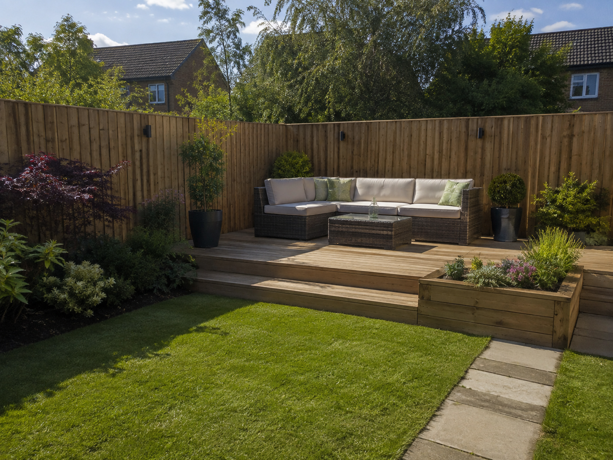

★★★★★
“Brilliant service from start to finish. Mark turned up when he said he would, quote was clear, and the finished job looks spot on.
Left everything tidy too.”

Fencing and decking repairs across Medway, Maidstone, Sittingbourne, Gravesend and the surrounding Kent area — from a single blown-down panel to a full structural repair. NVQ qualified. Fully insured. Free quotations.

A leaning fence is rarely just a leaning fence — it's usually a rotten post that's given way, with the panel simply following it down. We diagnose what's failed before we quote, which is why a repair from us tends to hold, rather than needing doing again in eighteen months.
Storms, general wear, and Kent's exposed, windy gardens all take their toll differently — a blown-down panel is a different job to a slowly rotting post, and a cracked deck board is different again to a shifted joist underneath it. We treat each one on its own merits, not with the same fix every time.
Not sure if it's a repair or something bigger? Send us a photo and we'll give you an honest read on it.
Swapping out a single damaged or blown-down panel without needing to touch the rest of the run.
A rotten or snapped post is often the real cause of a leaning fence — we dig out, replace and reset it properly in concrete.
Re-securing boards that have come loose or started to bow, before they turn into a bigger repair.
Swapping out cracked, splintering or rotten boards without rebuilding the whole deck around them.
Joists and support posts that have weakened or shifted, addressed at the frame — not just papered over at the surface.
We quote plenty of repairs that turn out to be exactly that — a repair. We'd rather you trust that assessment than wonder if we're steering you toward the bigger job.
Isolated damage — one panel, one post, a handful of boards — where the rest of the structure is sound. A repair extends its life without the cost of a full replacement.
Widespread rot or damage across most of the run, repeat repairs on the same section, or a structure that's simply reached the end of its life. We'll say so plainly if that's what we find.
A quick call or a photo is often enough for us to get a sense of the job before we even visit.
We assess the actual cause, not just the visible damage, and give you a clear, fixed quote — repair or replace, honestly.
Most repairs are quicker to arrange and complete than a full installation — often done in a single visit.
Offcuts and debris cleared away, the site left tidy, and a quick check-over with you before we leave.
Five-star rated

“Brilliant service from start to finish. Mark turned up when he said he would, quote was clear, and the finished job looks spot on.
Left everything tidy too.”
We're based in Medway and carry out repairs across the surrounding area — from tight town gardens to larger plots out toward the villages. Regularly working in:

Get a free, no-obligation quote from Parkwood Fencing & Decking — usually within a couple of days.
Anything else, just ask when you get in touch — happy to talk through the specifics of your fence or deck.
Yes — a single damaged panel or post doesn't usually mean the whole fence needs replacing. We'll look at the condition of the rest of the run and give you an honest recommendation, not just the bigger job.
Usually, yes. A leaning fence is often down to a rotten or snapped post rather than the panel itself — we'll diagnose the actual cause and repair or replace the post, re-concreting it properly so it doesn't move again.
Yes, this is one of our most common call-outs. Blown-down panels, snapped posts and storm-damaged decking are all repairs we handle regularly across Medway and Kent.
Yes, in most cases. Cracked, splintering or rotten boards can usually be replaced individually. If the substructure underneath — the joists — has weakened too, we'll flag that separately rather than just patching over it.
Repairs are usually quicker to arrange than a full installation, since there's less to plan around. We'll always give you a realistic timeframe when you get in touch, and prioritise anything that's a safety or security concern.
We're based in Medway and regularly carry out repairs across Maidstone, Sittingbourne, Gravesend and the surrounding Kent villages. If you're just outside these areas, get in touch anyway — we may still be able to help.